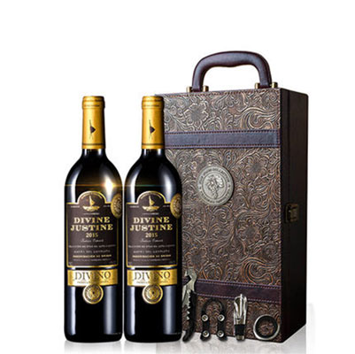

木地酒庄志甄级维代尔白冰酒2012
Woodland Vidal Premium Icewine
类型Type ：甜型白冰酒 Sweet Icewine
葡萄品种Grape Variety： 维代尔 Vidal
酒精度Alcoholic Strength ：10.5%vol.
葡萄采摘年份Vintage：2012
产区Wine Region： 加拿大/尼亚加拉湖边小镇
等级Class: VQA
净含量Net Weight: 375ml
价格：￥368
-
选择年份：
- 2002
- 1996
- 1982
收藏
分享
温馨提醒：不影响二次销售支持退货
- 商品详情
- 商品评价
- 社区活动
品鉴提示：该酒呈明亮迷人的宝石色，散发着阵阵馥郁的红莓，覆盆子等浆果香气，余味悠长持久，萦绕于口腔内久久不散，不愧为加拿大的志甄级瑰宝
Tasting Notes：
Wonderful bright red color with dark hues elude to the berry filled nose and palate concentrated full of cherry, raspberry , and red currant . This rare Cabernet Icewine is a real Canadian treasure and has a lengthy finish that is simply heavenly.